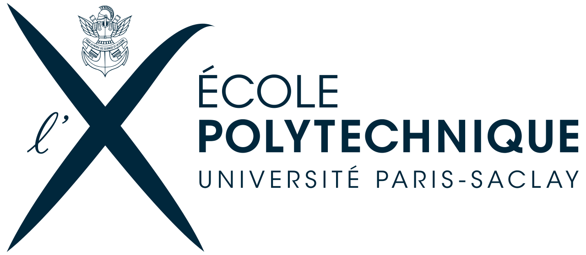
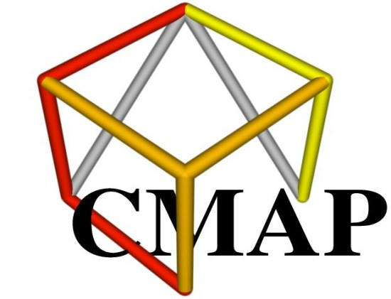

This software was developped by the
X-Audio team* :
François Alouges - Professor
Matthieu Aussal - Research Engineer
Tarek Marcé - Android developer
François Salmon - Sound Engineer
In collaboration with the CNSMDP* :
Alexis Baskind - Sound Engineer
Catherine de Boishéraud - Sound Engineer
Jean-Marc Lyzwa - Sound Engineer
Jean-Christophe Messonnier - Sound Engineer
Fundings* :
CNRS - INSMI
CNSMDP
Ecole Polytechnique - CMAP
* in alphabetical order


SmartRot by X-Audio
is the mobile version of hedrot.
Part of code is derived from Sebastian Madgwick's open-source gradient descent angle
estimation algorithm
(http://x-io.co.uk/open-source-imu-and-ahrs-algorithms/).
This programm use Illposed's JavaOSC library
(License)
Angles are send with three different OSC messages: